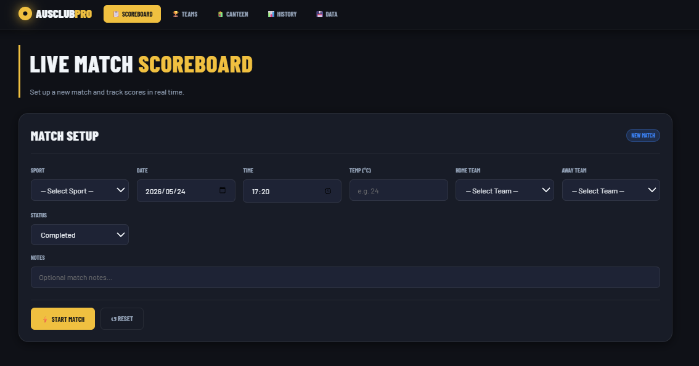
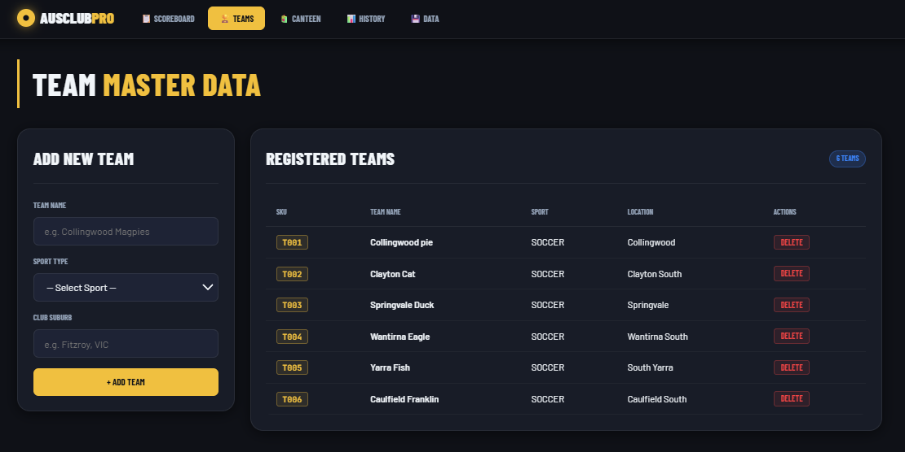
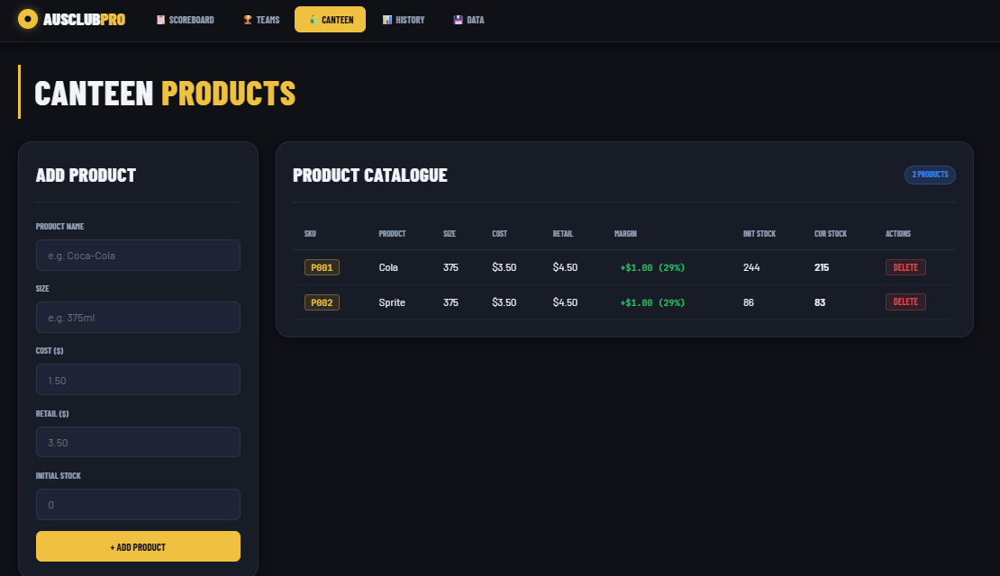
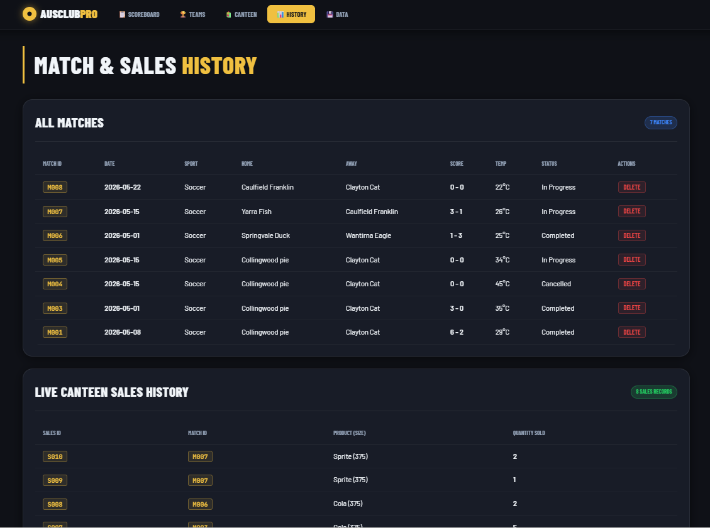

A free, private-by-design sports club management tool. Live scoreboard, team registry, canteen sales tracking — all running locally in your browser. No subscriptions, no cloud, no data extraction.
A conversation with my neighbour — their local club was juggling a whiteboard for scores and a cash tin for canteen. No app fit both problems at once without a paid plan or mandatory cloud account.
Set up a match in seconds — select sport, date, time, temperature, home team and away team. Track live scores with one tap. Supports Completed, In Progress, and Cancelled match states.
Maintain a master list of teams with auto-assigned SKU codes (T001, T002…). Each team stores its name, sport type, and suburb. Teams are available across all matches — register once, use forever.
Build a product catalogue with cost, retail price, and stock levels. During a match, log canteen sales per product. Margin is calculated automatically. Stock updates in real time as items are sold.
Every match you record is stored and visible in the History tab — date, sport, teams, score, temperature, and status. Full canteen sales history is logged per match for reconciliation at day's end.
Export your full match history and canteen sales records to CSV at any time. Open in Excel, Google Sheets, or any spreadsheet tool. Your records, your format, your device.
A single HTML file plus a stylesheet and a script. No frameworks to install, no server to run, no internet connection required after the first load. Works on any modern browser — desktop or mobile.




Click "Open Tool" above. The app loads instantly in your browser — no install, no login, no download. Bookmark it for quick access on match day.
Go to the Teams tab. Add your home team and any opposition teams you expect to face this season. Each team gets a unique SKU and is available in the Scoreboard dropdown from that point on.
Go to the Canteen tab. Add your products — drinks, snacks, whatever you sell. Enter cost price, retail price, and opening stock. The margin is calculated for you automatically.
On the Scoreboard tab, choose your sport, date, home and away teams, then hit Start Match. Update the score as the game progresses. Log canteen sales in parallel — all tied to the same match record.
After the match, head to the History tab to review results and canteen totals. Use the Data tab to export everything to CSV — ready for your end-of-season report or committee meeting.
All data is stored in your browser's localStorage. Nothing is sent to any server. To move data between devices or create a backup, use the built-in CSV export.
If privacy matters most to your club, this local version is the right choice. If your club needs multiple people updating data simultaneously on match day, the cloud version is what we're building next.
AUSTRALIAN SPORTS CLUB is a free tool built for local Australian sports clubs. If you're using it, I'd genuinely like to know what's working, what's missing, and what sports or features should come next.
This is a community tool — your feedback directly shapes what gets built. There's no roadmap committee here, just a developer who listens.
AUSTRALIAN SPORTS CLUB is free and open source. If it's saved your club time or trouble on match day, consider buying me a coffee — it helps fund the next update and keeps the tool going.
DISCLAIMER:
This tool is a free, open-source resource provided for personal and club use only. It does not constitute professional sports management, financial, or legal advice. Use at your own risk.